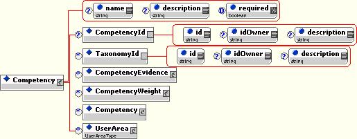
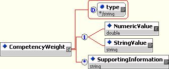

Competencies (Measurable Characteristics)
Recommendation, 2007 April 15
Editor:
Chuck Allen, HR-XML
Contributors:
Naomi Bloom, Bloom & Wallace; Dan Bork, iXmatch; Paul Kiel, HR-XML; David Scott, J.D. Edwards; David Cohn, Burning Glass, Inc.; Kim Bartkus, HR-XML; Robert Mickley, Gazebo Software; Enrique Kortright, DOD; Jason Weiss, DDI; Kathi Dolan, Manpower
Copyright © 2007 HR-XML Consortium, Inc..
Abstract
This document describes HR-XML’s competencies schemas. The competencies schema allows the capture of information about evidence used to substantiate a competency and ratings and weights that can be used to rank, compare, and otherwise evaluate of the sufficiency or desirability of a competency.
This schema is intended as a fragment or module that would be incorporated within broader process-specific schema. The competencies schema is particularly relevant to processes involving the rating, measuring, comparing, or matching an asserted competency (for example, a skill claimed in a resume) against one that is demanded (for example, a skill required in a job description or requisition).
Table of Contents
1.3.2 Items Outside of Design Scope
2 Supported Business Processes
4 Implementation Considerations
5 Appendix A - Document Version History
6 Appendix B – Related Documents
7 Appendix C – Reference Examples
7.1 Competency with Years of Experience and Test Score
7.2 License as Competency Evidence. 18
7.3 Education as Competency Evidence
7.4 Recursive Competencies: Communication Skills
7.5 Describing Language Skills
7.6 Direct Observation as Competency Evidence
7.7.1 Skills: Reading Comprehension
7.7.2 Abilities: Oral Comprehension
7.7.4 Work Activities: Performing Administrative Activities
7.7.5 Clerical: Example Combining O*Net With Privately Defined Measure
1 Overview
1.1 Objective
The objective of this project is the creation of an XML schema to provide trading partners standardized and practical means to exchange information about competencies within a variety of business contexts.
The competency schema delivered by this workgroup is intended as a fragment that will be used within broader, process-specific schema developed by the HR-XML Consortium and other organizations.
1.1.1 New In This Version
Within the Competency.xsd schema, an optional interval
attribute has been added to the NumericValue element within CompetencyEvidence
and CompetencyWeight (see Sections 3.2, CompetencyEvidence and 3.2.1,
CompetencyWeight). The interval attribute is used to specify the scale
increment or step when such information is necessary or useful for comparisons
or calculations.
Example: The Test of Written English® is scored on a six-point scale
rounded to the nearest half-point increment. The highest possible score is 6
(maxValue=”6”). The lowest is 0 (minValue=”0”). The
increment is “.5” (i.e., interval=“.5”). Thus, valid
scores are 6.0, 5.5, 5.0, 4.5, 4.0, 3.5, 3.0, 2.5, 2.0, 1.5, 1, and 0.
1.1.2 Terminology
One of the challenges in creating a standard schema for the exchange of competency information is the many ways that the term “competency” has been used by different people at different points in time within disciplines such as human resource management, organizational theory, behavioral science, industrial psychology, and education.
One of the HR-XML Competency Workgroup’s important design goals was the development of a competency schema that would be relatively simple and sufficiently flexible to be useful within a variety of business contexts. Towards this end, HR-XML’s Competency Workgroup wanted to avoid binding its schema to a definition of competency that would require difficult distinctions, such as the differences between “innate” and “learned” characteristics. Likewise, the workgroup did not want to bind the schema to a definition of competency that would limit the schema’s usefulness in capturing and exchanging information about behaviorally revealed competencies versus those competencies evidenced by assessments, certificates, or degrees.
In exploring the appropriate scope for the competencies schema, one of the concepts considered by the workgroup was “KASOCs,” as defined in Bloom & Wallace’s HRM Business Model "Starter Kit.” KASOC is an acronym for Knowledge, Skills, Abilities, and Other Characteristics. The concept of KASOC was specifically developed as a generalized and flexible descriptor for the type of measurable, performance-related characteristics that are important to numerous HR management processes. The KASOC concept was the basis for the following definition of competency adopted by the Workgroup:
Competency. A specific, identifiable, definable, and measurable knowledge, skill, ability and/or other deployment-related characteristic (e.g. attitude, behavior, physical ability) which a human resource may possess and which is necessary for, or material to, the performance of an activity within a specific business context.
Additional elaboration is required to understand some portions of this definition:
- Competencies are measurable. The
competencies schema is intended to capture information about measurable
characteristics. Some competencies are measurable, but nevertheless are
difficult to quantify. In some cases, the measure may be simply whether
the characteristic exists or does not exist. Some competencies can be
objectively measured, whereas others may only be subjectively recognized.
Example: In the context of HR-XML’s competency schema, education would be considered a competency when it can be quantified or when it is used a measure for a given business purpose. An educational degree may be evidence of a competency. Descriptive information about an educational degree – e.g., the location of the school or institution granting the degree – is not a competency.
§ Competencies are related to performing an activity. Competencies can be thought of as a level of ability or characteristic useful or necessary to performing an activity.
- Competencies are attributes of a human resource. However, the model developed by the Competency Workgroup is generalized enough so that it might be applied to other entities, such as organizations.
§ Competencies may include deployment-related characteristics such as "willing to relocate," "non-smoker," etc., but generally would not include purely demographic characteristics, such sex, race, or religion.
- Competencies can be recursive. A competency may include other competencies. One competency might be decomposed into several component competencies, each of which might be separately measurable.
NOTE: While the workgroup’s definition of competencies is based on the concept of KASOCs, the term competency was chosen over KASOCs because it was deemed to be more meaningful to a wider audience. Moreover, the acronym KASOC was not considered be appropriate based on the element naming conventions outlined in the HR-XML Consortium’s Schema Design Guidelines.
1.1.3 Domain Issues
The concept of competency pervades HR management processes. Competencies are not merely descriptors of an employee, position, organizational work unit, or training resource; they are the glue that holds together major HR management activities. It is difficult to discuss any major HR management process without the concept of competencies.[1]
The HR-XML Consortium’s competencies schema is designed as a reusable schema fragment that might be applicable to a wide range of business processes. Generally speaking, the schema could potentially be useful in any process involving the comparison, matching, weighting, or rating of a competency demanded against an actual available competency. While competencies have immediate relevancy to HR management processes, they also are relevant to certain business process outside the HR domain.
Examples of some of the principal HR management activities in which a standard for the exchange of competencies information could be valuable are described below.
Staffing the organization. Differing skill definitions and the use of widely varying skill taxonomies pose a barrier to efficient data interchange in many recruiting and staffing processes. Some employers have developed their own internal taxonomies of describing skills and competencies. Some of these taxonomies may be formal, whereas others may have developed informally over time. Other employers make use of third-party skills taxonomies. Job boards, staffing firms, and other recruiting and staffing venues also might have their own way of classifying positions by skill and/or industry and they also make use of internal as well as third-party skills taxonomies. Because of differing skill taxonomies, an employer might need to map its internal descriptors or taxonomies to those used by each of its recruiting and staffing vendors. Adding a new job board or vendor may require the creation of a new set of mappings.
A standard schema for competencies will make it easier to create mapping between different taxonomies.
Staffing data exchanges typically would take place between human resource management systems (HRMS) and recruiting systems and the systems of recruiting venues such as job boards and temporary staffing firms.
Developing the Workforce. A standard model for the exchange of competency information could have many uses in skills evaluation, gap analysis, and training. For example, a standard for competency information could enable gap analysis of a person’s current competency levels compared to the requirements of that person’s current position. Similarly, the standard could enable gap analysis between a person’s current competency level and that required by a target, or an aspired to, job or position. Gap analysis could be useful in determining available training to meet gap requirements and in forecasting training requirements across an organization or department.
The data exchanges might take place between HRMS, training development systems, and systems of vendors offering training programs.
Managing the Organizational Structure. This might involve reviewing the needs of an organization without considering personnel with existing positions. This process might involve a hierarchical breakdown of work and an assessment of competencies rated with relative weight at the optimal level by job. Once this is completed, one may create a model to support:
- Forecasting for re-organizations or acquisitions;
- Mapping competencies between the jobs and personnel; and
- Conducting analyses of gaps between competencies required and those currently available.
The data exchange might be between an organizational planning system and the human resource system.
Administering Compensation. A standard means for the exchange of competency information would have many uses in compensation administration:
- A standard for the exchange of competency information could be useful in conducting job evaluations aimed at determining the rank or worth of jobs.
- A standard for competencies also could be useful in supporting performance management systems by enabling the tracking of changes in competencies that may be pertinent to decisions regarding rewards.
- A standard for competencies could be useful in mapping equivalent skills across differing taxonomies. This might be useful in applying wage survey data to job pay structures.
- Competency standards could be useful in administering competency-based pay programs.
Data exchanges would be between HRMS, performance management and appraisal systems, and a variety of compensation planning and administration systems.
1.1.4 Business Reasons
A standard schema for the exchange of competency data has the potential to improve communication across many HR activities and to enhance business intelligence. A standard competencies schema has the potential to greatly simplify data transfer processes, thereby helping HR organizations save time and money. Many more cross-disciplinary transfers of business intelligence will be possible.
Job and position postings provide one of the clearest examples of data-exchange barriers and their associated costs. There is tremendous diversity in the way job boards classify the way jobs are advertised. Consequently, there is not an easy way to map between different classification systems. Because creating and maintaining mappings between an employer’s internal taxonomy and the ones used by job boards is difficult, many employers use third-party services to manage the mappings as well as handle the different formats required by different recruiting instruments. The use of a standard way of exchanging competency information within the HR-XML Consortium’s Staffing Exchange Protocol’s would make it much easier to create and maintain mappings and eliminate the extra expense of a posting middleman.
1.2 Design Requirements
HR-XML competencies schema is designed to fulfill the following requirements:
- The competency schema is simple and sufficiently flexible and generalized so that it is useful within a variety of business contexts.
- The schema provides structure to enable competencies to be easily compared, ranked, and evaluated.
- The schema is capable of referencing competency taxonomies from which competency descriptions were taken or used.
- The competency schema is relatively simple and compact so that it does not add to the complexity of the process-specific schemas within which it is used. For instance, the competencies schema would likely be used as an alternative or replacement for the “Skill” element within the HR-XML Consortium’s Staffing Exchange Protocol. Thus, the Competency element is as compact and as simple as possible, while still meeting the other design goals listed above.
1.3 Scope
1.3.1 Major Components
The Competency schema is intended as a flexible, practical means to communicate both unstructured competency data (such as that that may be captured from a resume or profile) or structured competency data from a taxonomy.
Note that a separate schema, CompetencyTypes, is a container for competency-related data types. Initially, this schema will include elements and data types related to competency references (see Appendix B – Related Documents).
1.3.2 Items Outside of Design Scope
- Taxonomies. The ability to reference taxonomies from which particular competency descriptions were taken or derived is a design requirement. However, the development of specific competency taxonomies is outside the design scope. A generalized framework for describing taxonomies also is outside of the scope of the initial version of the competencies schema. However, a generalized schema for describing taxonomies has been identified by the HR-XML Competencies Workgroup as a possibility for future development.
- Mapping between taxonomies. The competencies schema will enable the capture of competency metadata that may be useful in creating mappings between different taxonomies. However, the schema’s design scope does not consider the specific means by which such mappings are created.
- Measurement scales. The initial version of the Competencies schema allows for the capture of measurement values as well as an identifier that could be used to relate a value to a particular measurement system or scale (for example, a grade point average on a 4.0 scale). However, a generalized framework for describing measurement systems or scales is outside the scope of the first version of the competencies schema.
- Capture of
descriptive detail. Certain business processes may require the
capture of supporting information that goes beyond what is captured by the
competencies schema. As explained in Section 1.1.2, Terminology, the HR-XML
Consortium competencies schema focuses on broad array of “measurable
characteristics.” The competencies schema allows the capture
of information about evidence used to substantiate a competency and
ratings and weights that can be used to rank, compare, and otherwise
evaluate of the sufficiency or desirability of a competency. However, a
business process might require additional information. For instance, a
hiring process might require the capture of contact information
(telephone, address, etc.) for a school or institution from which a degree
or certificate is claimed. Descriptive detail for specific types of
competencies or competency evidence is beyond the immediate scope of this
project.
NOTE: While the competencies project does not consider descriptive detail for specific types of competencies or competency evidence, other specifications produced by the HR-XML Consortium as well as by other standards groups may be useful in this regard. For instance, Staffing Exchange Protocol Version 1.1 includes useful structures for capturing location and contact detail for schools and institutions. SEP also includes detail for capturing information about employment references as well as reports from those references. Note also that the IMS Global Learning Project has developed a Reusable Competency Definitions Information Model, which may be useful in capturing definitional and descriptive information about competencies. For further information, see http://www.imsproject.org/rcd/rcdinfo01.html
2 Supported Business Processes
The Competencies schema is intended to be a fragment that can be incorporated within a wide-variety of process-specific schemas. Among the range of processes the competencies schema may help support are:
§ Assessments
§ 360º Feedback (Evaluation by Peers)
§ Other performance measurement instruments that measure competencies
§ Competency Modeling (an expert service)
§ Individual performance development planning and goal setting
§ Performance monitoring & reporting
§ Training curricula and individual courses that build competencies
§ Career development systems
§ Inventories of workforce competence (taxonomies for general and specialized uses)
§ Selection procedures that assess competencies
§ Succession planning systems
§ Pay-for-competencies compensation systems
§ Automated job descriptions
§ Core competencies for strategic planning
§ Recruiting
3 Schema Design
The following sections illustrate and explain the components of the HR-XML Consortium’s Competency Schema.
3.1.1 Competency

|
Component Name [Global types listed at the end of the table.] |
ContentModel* |
Definition |
|
/ |
CompetencyId
- [complexType] - S
(0/1) |
A specific, identifiable, definable, and measurable knowledge, skill, ability and/or other deployment-related characteristic (e.g. attitude, behavior, physical ability) which a human resource may possess and which is necessary for, or material to, the performance of an activity within a specific business context. |
|
/
Competency/ |
- xsd:string - |
The name for the related component. |
|
/ Competency/ |
- xsd:string - |
This optional attribute is available to provide additional information about the Id. |
|
/
Competency/ |
- xsd:boolean - |
A boolean used to indicate whether the CompetencyEvidence is mandatory for a particular position or given context. |
|
/
Competency/ |
id - xsd:string - required |
An identification code assigned to identify or classify the Competency. A taxonomy might include an identification code for each Competency or identification codes might be agreed upon by trading partners. |
|
/
Competency/ |
id - xsd:string - required |
A code that identifies the taxonomy. |
3.2 CompetencyEvidence

|
/
Competency/ |
EvidenceId
- [complexType] - S
(0/1) |
CompetencyEvidence is used to capture information to substantiate the existance, sufficiency, or level of a Competency. CompetencyEvidence might include test results, reports, performance appraisals, evaluations, certificates, licenses, or a record of direct observation, such as a report given by a former supervisor or other employment reference. |
|
/
Competency/ CompetencyEvidence/ |
id - xsd:string - required |
A code that identifies the CompetencyEvidence. |
|
/
Competency/ CompetencyEvidence/ |
xsd:extension base: xsd:double |
NumericValue is the required or measured level for the competency. The content of NumericValue is a rating value. The minValue, maxValue, interval, and description attributes of NumericValue provide information about the rating scale that is being used, so that the rating value can be interpreted. |
|
/
Competency/ CompetencyEvidence/ NumericValue/ |
- xsd:double - |
The minimum value of the rating scale. |
|
/
Competency/ CompetencyEvidence/ NumericValue/ |
- xsd:double - |
The maximum value of the rating scale. |
|
/
Competency/ CompetencyEvidence/ NumericValue/ |
- xsd:double - |
The increment or step for the relevant scale. |
|
/
Competency/ CompetencyEvidence/ NumericValue/ |
- xsd:string - |
This optional attribute is available to provide additional information about the Id. |
|
/ Competency/
CompetencyEvidence/ |
xsd:extension base: xsd:string |
StringValue is the required or measured level for the competency. The content of StringValue is a rating value. The minValue, maxValue, and name attributes of StringValue provide information about the rating scale that is being used, so that the rating value can be interpreted. |
|
/
Competency/ CompetencyEvidence/ StringValue/ |
- xsd:string - |
The minimum value of the rating scale. |
|
/
Competency/ CompetencyEvidence/ StringValue/ |
- xsd:string - |
The maximum value of the rating scale. |
|
/
Competency/ CompetencyEvidence/ StringValue/ |
- xsd:string - |
This optional attribute is available to provide additional information about the Id. |
|
/
Competency/ CompetencyEvidence/ |
- xsd:string - S (0/*) |
Contains additional descriptive information to substantiate or clarify a rating, measure, value, etc. |
|
/
Competency/ CompetencyEvidence/ |
- AnyDateTimeType - |
The date on which the CompetenceEvidence first establishes the existence of the Competency. |
|
/
Competency/ CompetencyEvidence/ |
- xsd:string - |
The name for the related component. |
|
/
Competency/ CompetencyEvidence/ |
- xsd:string - |
A description of the type of CompetencyEvidence. |
|
/ Competency/
CompetencyEvidence/ |
- AnyDateTimeType - |
The identification of any applicable expiration date, such as the date that a license or certification expires. |
|
/
Competency/ CompetencyEvidence/ |
- xsd:string - |
A code identifying the type of CompetencyEvidence. |
|
/
Competency/ CompetencyEvidence/ |
- xsd:boolean - |
A boolean used to indicate whether the CompetencyEvidence is mandatory for a particular position or given context. |
|
/ Competency/
CompetencyEvidence/ |
- AnyDateTimeType - |
A requirement or assertion for the date on which the Competency was last used. |
3.2.1 CompetencyWeight

|
/
Competency/ |
NumericValue
- xsd:double - C
(1/1) |
CompetencyWeight allows the capture of information on the relative importance of the Competency or the sufficiency required or other type of dimension. An extensible “type” attribute is available so that custom weights or dimensions may be specified. Multiple CompetencyWeights are permitted since more than one type might apply to the competency. |
|
/
Competency/ CompetencyWeight/ |
xsd:extension base: xsd:double |
NumericValue is the required or desired level for the competency. The content of NumericValue is a rating value. The minValue, maxValue, interval, and description attributes of NumericValue provide information about the rating scale that is being used, so that the rating value can be interpreted. |
|
/
Competency/ CompetencyWeight/ NumericValue/ |
- xsd:double - |
The minimum value of the rating scale. |
|
/
Competency/ CompetencyWeight/ NumericValue/ |
- xsd:double - |
The maximum value of the rating scale. |
|
/
Competency/ CompetencyEvidence/ NumericValue/ |
- xsd:double - |
The increment or step for the relevant scale. |
|
/
Competency/ CompetencyWeight/ NumericValue/ |
- xsd:string - |
This optional attribute is available to provide additional information about the Id. |
|
/
Competency/ CompetencyWeight/ |
xsd:extension base: xsd:string |
StringValue is the required or measured level for the competency. The content of StringValue is a rating value. The minValue, maxValue, and name attributes of StringValue provide information about the rating scale that is being used, so that the rating value can be interpreted. |
|
/
Competency/ CompetencyWeight/ StringValue/ |
- xsd:string - |
The minimum value of the rating scale. |
|
/
Competency/ CompetencyWeight/ StringValue/ |
- xsd:string - |
The maximum value of the rating scale. |
|
/
Competency/ CompetencyWeight/ StringValue/ |
- xsd:string - |
This optional attribute is available to provide additional information about the Id. |
|
/
Competency/ CompetencyWeight/ |
- xsd:string - S (0/*) |
Contains additional descriptive information to substantiate or clarify a rating, measure, value, etc. |
|
/
Competency/ CompetencyWeight/ |
- ExtendedWeightType - |
Identifies the type of CompetencyWeight. Enumerated values are: levelOfInterest (A level of interest asserted or required for the competency) and skillLevel (A level of skill asserted or required for the competency). |
3.2.2 Global Simple Types
|
/ |
- [Union]: CompetencyWeightType,xStringPatternExtensionType |
Globally scoped data type. See element or attribute declaration for definition. |
|
/ |
xsd:restriction base: xsd:string [Enumerations]: levelOfInterest, skillLevel |
Globally scoped data type. See element or attribute declaration for definition. |
4 Implementation Considerations
4.1 Recursion
Competencies can have relationships to one another. One way that the Competencies schema allows these relationships to be expressed is through the recursive nesting of one competency inside another. Below are a few issues implementers should consider when using the schema’s recursive features:
§ Is recursion necessary to accurately capture or transfer information about the competency? Consider for instance, that each competency has a CompetencyId, which usually would be taken from an outside taxonomy. In some cases, it may be unnecessary to express a relationship between two competencies in the data transfer if the relationship is already clear within the outside taxonomy.
§ Does the extent of recursion impose undue complexity? The Competencies schema does not constrain the extent of recursion. However, there are likely to be limits to what is useful and practical. Nesting competencies beyond one or two levels generally is not advisable.
§ Is the relationship between the nested competencies clear?
In the process of developing the schema, the HR-XML Competencies workgroup discussed the desirability of being able to express relationships between
competencies in an explicit manner. Developing a taxonomy describing those
relationships was one idea that was explored. For instance, it might be
desirable to express that a child competency is related to a parent competency
by stating that the child “is a type of” the parent competency. Or
it might be desirable to express that a particular competency “has
a” particular component competency. The development this type of taxonomy
is outside the immediate scope of the initial version of the Competencies schema (See 1.3.2, Items Outside of Design Scope).
In the absence of an explicit way to express the relationship between a
parent and child competency, recursion should only be used where the
relationship between parent and child competencies is known by trading partners
or otherwise can be easily inferred. The Competency element has a description
attribute, which might be used to provide useful information about the
relationship between parent and child competencies.
5 Appendix A - Document Version History
|
Date |
Description |
|
2001-07-31 |
First Draft |
|
2001-08-21 |
Added issues list, updated diagram. |
|
2001-08-29 |
Added Reference Examples |
|
2001-08-30 |
Add SupportingInformation element and description. Recommendation of schema. |
|
2001-09-04 |
Changed MeasuredValue to a choice of NumericValue and StringValue. Made numerous typographical changes. Clarified that the description of measurement systems/scales is outside of the initial project scope. Changed “Psychometric (Personality) testing” to Psychometric testing. |
|
2001-09-17 |
Made changes per CPO review: Weight to CompetencyWeight; added implementation guidance on recursiveness; added bullet on measurement scales (outside of scope); changed xsd:data to AnyDateTime Type; changed required attribute to Boolean from yes/no enumeration. |
|
2001-Oct-16 |
Approved Recommendation by HR-XML Consortium |
|
2002-Dec-16 |
Draft for Version 1.1 enhancements |
|
2003-Jan-9 |
Approved by Recruiting and Staffing for submission to CPO/TSC. |
|
2003-Feb-26 |
Approved recommendation by HR-XML Consortium. The default and targetNamespaces of all HR-XML schemas have been standardized to "http://ns.hr-xml.org". This recommendation is available as part of the HR-XML 2_0 architecture. |
|
2005-June-29 |
Added description of new interval attribute on numeric value. |
|
2005-Dec-15 |
Minor edits related to feedback from CPO. Memorialized in workgroup mailing list archives. |
|
2006-Feb-28 |
Approved by Consortium |
|
2007-Apr-15 |
Approved by Consortium |
6 Appendix B – Related Documents
|
Reference |
Link |
|
IMS Reusable Competency Definitions Information Model
|
http://www.imsglobal.org/
|
|
Competency Schema |
|
|
CompetencyTypes |
|
|
DateTimeDataTypes |
http://ns.hr-xml.org/2_5/HR-XML-2_5/CPO/DateTimeDataTypes.html http://ns.hr-xml.org/2_5/HR-XML-2_5/CPO/DateTimeDataTypes.xsd |
7 Appendix C – Reference Examples
7.1 Competency with Years of Experience and Test Score
This example shows an employee who has Java as a competency. Acme Company, using their standard Java test, tested this employee. The candidate’s test score was 89 on that test. In addition, it’s recorded that the employee has 4 years of experience using Java and on a scale from 1-100, has a score of 90 for their level of interest.
<Competency description="Java is an object oriented computer language" name="Java">
<CompetencyId description="Competency id is based on Acme internal taxonomy" id="574" idOwner="Acme Company"/>
<TaxonomyId description="My ids are based on Acme Company Taxonomy" idOwner="Acme Company" id="1"/>
<CompetencyEvidence dateOfIncident="2001-08-23" name="Test Score" typeDescription="Test Score from internal test" typeId="54">
<EvidenceId description="Java Test from internally administered test" id="547" idOwner="Acme Company"/>
<NumericValue description="100 point scale" maxValue="100" minValue="0">89</NumericValue>
</CompetencyEvidence>
<CompetencyEvidence dateOfIncident="2001-08-23" name="Years of Experience" typeDescription="Years of Experience" typeId="7">
<EvidenceId description="Years of Experience in Competency" id="7" idOwner="Acme Company"/>
<NumericValue description="Range in years for experience">4</NumericValue>
</CompetencyEvidence>
<CompetencyWeight type="levelOfInterest">
<NumericValue description="Acme Company Scale 100 point" maxValue="100" minValue="0">90</NumericValue>
</CompetencyWeight>
</Competency>
7.2 License as Competency Evidence
This example shows a candidate’s competency to drive a car. The evidence used in this example is a valid drivers license that was obtained on 12/23/1986. The measured value in this case is simply 0 or 1 (1 meaning that the candidate has it, 0 meaning they don’t).
<Competency description = "Licensed to drive" name = "Drivers License">
<CompetencyId description = "Competency id is based on Acme internal taxonomy" id = "233" idOwner = "Acme Company"/>
<TaxonomyId description = "My ids are based on Acme Company Taxonomy" idOwner = "Acme Company" id = "1"/>
<CompetencyEvidence dateOfIncident = "1986-12-23" name = "License" typeDescription = "Drivers License" typeId = "231">
<EvidenceId description = "Valid Minnesota Drivers License" id = "W9D X8S8" idOwner = "Minnesota DMV"/>
<NumericValue description = "Scale of 0 or 1" maxValue = "1" minValue = "0">1</NumericValue>
</CompetencyEvidence>
</Competency>
7.3 Education as Competency Evidence
This example shows a candidate’s competency fulfilling a requirement for Bachelors Degree. The evidence used in this example is the Bachelors Degree itself, which was obtained on 05/21/1992. The measured value in this case is simply 0 or 1 (1 meaning that the candidate has it, 0 meaning they don’t). For additional evidence, the Grade Point average for the degree is presented as additional evidence. In this case, the grade point average is 3.76.
<Competency description="College Degree" name="College Degree">
<CompetencyId description="Competency id is based on Acme internal taxonomy" id="233" idOwner="Acme Company"/>
<TaxonomyId description="My ids are based on Acme Company Taxonomy" idOwner="Acme Company" id="1"/>
<CompetencyEvidence dateOfIncident="1992-05-21" name="Degree" typeDescription="College Degree" typeId="231">
<EvidenceId description="Bachelor's degree from accredited school" id="100" idOwner="University of Wisconsin"/>
<NumericValue description="Scale of 0 or 1" maxValue="1" minValue="0">1</NumericValue>
</CompetencyEvidence>
<CompetencyEvidence dateOfIncident="1992-05-21" name="GPA" typeDescription="Grade Point Average for Degree" typeId="101">
<EvidenceId description="GPA" id="101" idOwner="University of Wisconsin"/>
<NumericValue description="Scale of 0 or 4" maxValue="4" minValue="0">3.76</NumericValue>
</CompetencyEvidence>
</Competency>
7.4 Recursive Competencies: Communication Skills
Communication skills can be made up of two skills: written and oral communication skills. Written and oral communication skills are the measurable and observable skills to which an employee/applicant will be measured. In order to assess whether a person has Communication Skills, it is necessary to evaluate the person’s written and oral communication skills (the measurable and observable skills). This example weights oral communication skills higher (65 percent) than written communication skills (35 percent).
<Competency name="Communication Skills">
<Competency name="Written Communication Skills">
<CompetencyEvidence name="WRITTENTEST1-A" dateOfIncident="1995-01-01" lastUsed="2000-01-01">
<NumericValue minValue="3" maxValue="5" description="SEP-equivalent Skill-Level Range">5</NumericValue>
</CompetencyEvidence>
<CompetencyWeight>
<NumericValue minValue="0" maxValue="100">35</NumericValue>
</CompetencyWeight>
</Competency>
<Competency name="Oral Communication Skills">
<CompetencyEvidence name="ManagerObservation" dateOfIncident="1996-01-01" lastUsed="2000-01-01">
<NumericValue minValue="1" maxValue="5" description="Company XYZ Skill Range">5</NumericValue>
</CompetencyEvidence>
<CompetencyWeight>
<NumericValue minValue="0" maxValue="100">65</NumericValue>
</CompetencyWeight>
</Competency>
</Competency>
7.5 Describing Language Skills
One type of skill that is important for many jobs is that of language. It is not sufficient to say that someone is “fluent” in a language. It is important, especially when looking at what an employee is required to do for a particular job, to look at how the language skill is being used. It may be very important for the individual to know how to read a particular language but there may not be any need to be able to write or to speak it. In other jobs, it may be important to be able to speak a particular language but there may not be any need to be able to write or read in that language.
<Competency name="Speaking Spanish">
<CompetencyEvidence name="Spanish Language Oral Proficiency Interview" dateOfIncident="1995-01-01" lastUsed="2000-01-01">
<NumericValue minValue="1" maxValue="5" description="oral proficiency interview rating">5</NumericValue>
</CompetencyEvidence>
</Competency>
7.6 Direct Observation as Competency Evidence
There are certain skills that need to be assessed, evaluated and evidenced through direct observation. One example of this would be customer service. A manager may observe an employee dealing with customers and notice how the employee treats the customers. It may be difficult to test for customer service and it may be difficult to assess customer service based only on customer feedback.
<?xml version="1.0" encoding="UTF-8"?>
<Competency name="Customer Service" xmlns:xsi="http://www.w3.org/2001/XMLSchema-instance" xmlns="http://ns.hr-xml.org/2004-08-02" xsi:schemaLocation="http://ns.hr-xml.org/2004-08-02 Competencies.xsd">
<CompetencyEvidence name="ManagerObservation" dateOfIncident="1995-01-01" lastUsed="2000-01-01">
<NumericValue minValue="4" maxValue="5" description="Company ABC Skill Level Range">5</NumericValue>
</CompetencyEvidence>
</Competency>
7.7 O*Net Examples
The Occupational Information Network (O*Net) is a database of worker attributes and job characteristics. It defines a common language for defining and describing occupations. This taxonomy contains information about knowledge, skills, abilities, interests, general work activities and work context. The United States Department of Labor (DOL) funds the O*NET program.
The O*Net database is representative of the type of data that can be captured and exchanged using the HR-XML Consortium Competency schema. The governments of other countries as well as a variety of private organizations publish similar skills taxonomies. The following information is intended to be illustrative of how an implementer might exchange data from a skills taxonomy. O*Net is not the only taxonomy one might use in conjunction with the HR-XML Competencies specification. There are business cases for exchanging skills data using a variety of taxonomies. In some cases, an implementer might want to refer to both a third-party taxonomy (such as O*Net) as well as a taxonomy that is used internally. The HR-XML Consortium’s Competencies specification could make managing multiple taxonomies easier.
The O*Net data presented below is provided for illustrative purposes only. It is presented out of context of the O*Net database. For further information on O*Net, see http://online.onetcenter.org
The following are selections from the O*Net 3.1 Database and examples of how they might be captured using the HR-XML Competencies specification.
7.7.1 Skills: Reading Comprehension
|
Skills |
Description |
Element ID |
Importance |
Level |
Scale |
|
Reading Comprehension |
Understanding written sentences and paragraphs in work related documents |
2.A.1.a |
85 |
57 |
1-100 |
HR-XML Competencies Example
<Competency name="Reading Comprehension" description="Understanding written sentences and paragraphs in work related documents">
<CompetencyId id="2.A.1.a"/>
<TaxonomyId id="O*NET" idOwner="National O*Net Consortium" description="Occupational Information Network"/>
<CompetencyWeight type="x:Importance">
<NumericValue maxValue="100" minValue="1">85</NumericValue>
</CompetencyWeight>
<CompetencyWeight type="x:Level">
<NumericValue maxValue="100" minValue="1">57</NumericValue>
</CompetencyWeight>
</Competency>
7.7.2 Abilities: Oral Comprehension
|
Abilities |
Description |
Element ID |
Importance |
Level |
Scale |
|
Oral Comprehension |
The ability to listen to and understand information and ideas presented through spoken words and sentences |
1.A.1.a.1 |
65 |
57 |
1-100 |
HR-XML Competencies Example
<Competency name="Oral Comprehension" description="The ability to listen to and understand information and ideas presented through spoken words and sentences">
<CompetencyId id="1.A.1.a.1"/>
<TaxonomyId id="O*NET" idOwner="National O*Net Consortium" description="Occupational Information Network"/>
<CompetencyWeight type="x:Importance">
<NumericValue maxValue="100" minValue="1">65</NumericValue>
</CompetencyWeight>
<CompetencyWeight type="x:Level">
<NumericValue maxValue="100" minValue="1">57</NumericValue>
</CompetencyWeight>
</Competency>
7.7.3 Knowledge: Clerical
|
Knowledge |
Description |
Element ID |
Importance |
Level |
Scale |
|
Clerical |
Knowledge of administrative and clerical procedures and systems such as word processing systems, filing and records management systems, stenography and transcription, forms design principles, and other office procedures and terminology |
2.C.1.b |
92 |
74 |
1-100 |
HR-XML Competencies Example
<Competency name="Clerical" description="Knowledge of administrative and clerical procedures and systems such as word processing systems, filing and records management systems, stenography and transcription, forms design principles, and other office procedures and terminology">
<CompetencyId id="2.C.1.b"/>
<TaxonomyId id="O*NET" idOwner="National O*Net Consortium" description="Occupational Information Network"/>
<CompetencyWeight type="x:Importance">
<NumericValue maxValue="100" minValue="1">92</NumericValue>
</CompetencyWeight>
<CompetencyWeight type="x:Level">
<NumericValue maxValue="100" minValue="1">74</NumericValue>
</CompetencyWeight>
</Competency>
7.7.4 Work Activities: Performing Administrative Activities
|
Work Activities |
Description |
Element ID |
Importance |
Level |
Freq. |
Scale |
|
Performing Administrative Activities |
Approving requests, handling paperwork, and performing day-to-day administrative tasks. |
4.A.4.c.1 |
100 |
52 |
100 |
1-100 |
HR-XML Competencies Example
<Competency name="Performing Administrative Activities" description="Approving requests, handling paperwork, and performing day-to-day administrative tasks.">
<CompetencyId id="4.A.4.c.1"/>
<TaxonomyId id="O*NET" idOwner="National O*Net Consortium" description="Occupational Information Network"/>
<CompetencyWeight type="x:Importance">
<NumericValue maxValue="100" minValue="1">100</NumericValue>
</CompetencyWeight>
<CompetencyWeight type="x:Level">
<NumericValue maxValue="100" minValue="1">52</NumericValue>
</CompetencyWeight>
<CompetencyWeight type="x:Frequency">
<NumericValue maxValue="100" minValue="1">100</NumericValue>
</CompetencyWeight>
</Competency>
7.7.5 Clerical: Example Combining O*Net With Privately Defined Measure
The example below shows how an implementer might qualify or elaborate on a standard O*Net definition with privately defined criteria.
<Competency name="Clerical" description="Knowledge of administrative and clerical procedures and systems such as word processing systems, filing and records management systems, stenography and transcription, forms design principles, and other office procedures and terminology">
<CompetencyId id="2.C.1.b"/>
<TaxonomyId id="O*NET" idOwner="National O*Net Consortium" description="Occupational Information Network"/>
<CompetencyWeight type="x:Importance">
<NumericValue maxValue="100" minValue="1">92</NumericValue>
</CompetencyWeight>
<CompetencyWeight type="x:Level">
<NumericValue maxValue="100" minValue="1">74</NumericValue>
</CompetencyWeight>
<Competency name="MS Office Proficiency" description="Proficency with Microsoft Word, Excel, Access, and other components of MS Office" required="true">
<CompetencyEvidence required="true" name="Acme Corp MS Office Proficency Test" typeDescription="A standard test of MS Office proficency for the administrative employees of Acme Corp">
<NumericValue minValue="0" maxValue="100">85</NumericValue>
</CompetencyEvidence>
</Competency>
</Competency>
[1] Competency-Centric Human Resource Management, Prepared by Naomi Lee Bloom, Bloom & Wallace, HR-XML Consortium Quarterly Meeting, Pleasanton, California, October 16-17, 2000